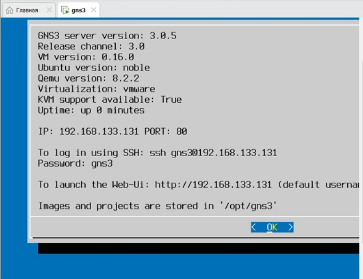
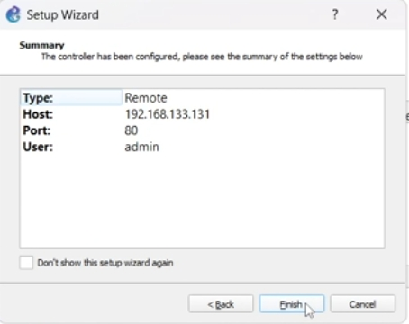
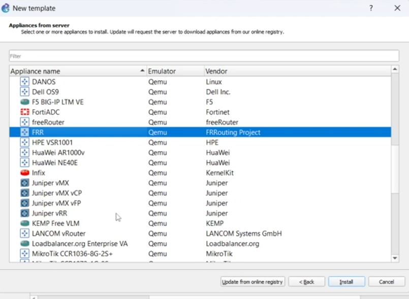
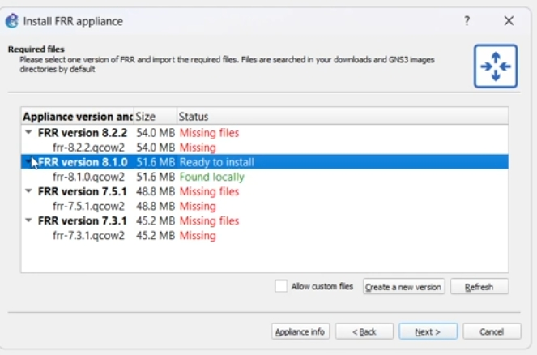
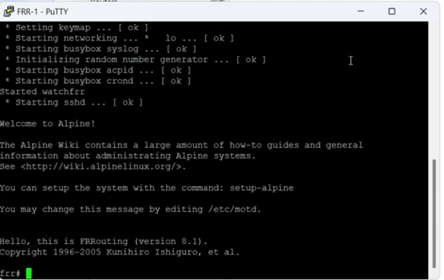
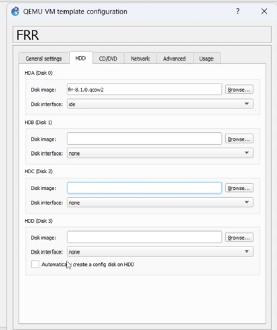
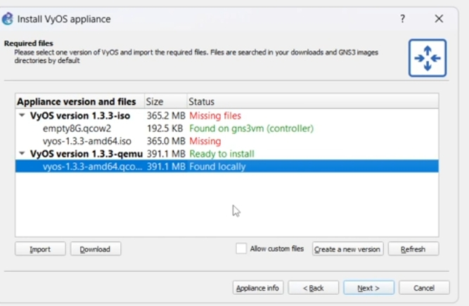
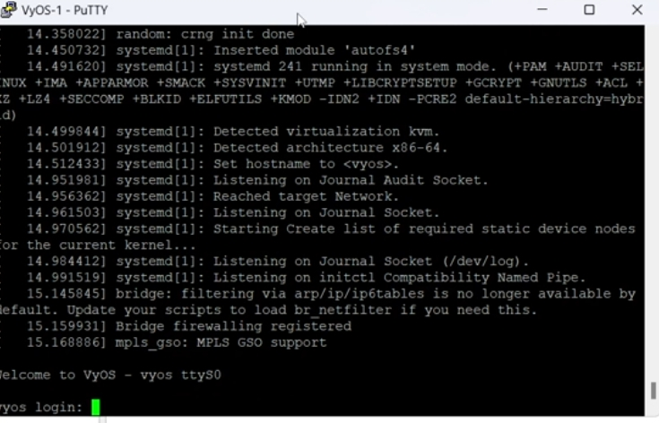
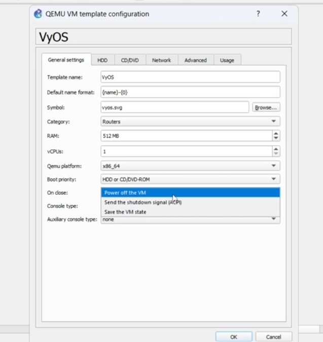

Сетевые технологии
Подготовка экспериментального стенда GNS3
Шихалиева Зурият Арсеновна
Российский университет дружбы народов, Москва,
Россия
2 декабря 2025
Основная цель
Установка и настройка GNS3 и сопутствующего сетевого ПО.
Запуск GNS3 VM
- Проверка версии сервера
- Проверка состояния виртуализации
- Получение IP-адреса для подключения

Запуск GNS3 VM
Подключение клиента к GNS3 VM
- Тип: Remote
- Порт: 80
- Пользователь: admin

Подключение GNS3
Выбор шаблона FRR

Выбор устройства FRR
Импорт образа FRR
- Использована версия: 8.2.2
- Образ найден локально
- Статус: Ready to install

Импорт FRR
Запуск FRR
- Успешная загрузка
- Готовность к конфигурации маршрутизации

Консоль FRR
Параметры виртуальной машины FRR

Диски FRR
Поиск и выбор образа
- Найден образ VyOS 1.3.3-qemu
- Статус: Ready to install

Импорт VyOS
Запуск VyOS
- Успешная загрузка системы
- Запрос учётных данных

Консоль VyOS
Параметры шаблона VyOS
- 512 MB RAM
- 1 vCPU
- Загрузка с HDD/CD-ROM

Параметры VyOS
Основные достижения
- Установлены GNS3 и GNS3 VM
- Проверена корректность их взаимодействия
- Импортированы и запущены маршрутизаторы:
- Подготовлен экспериментальный стенд для следующих лабораторных
работ